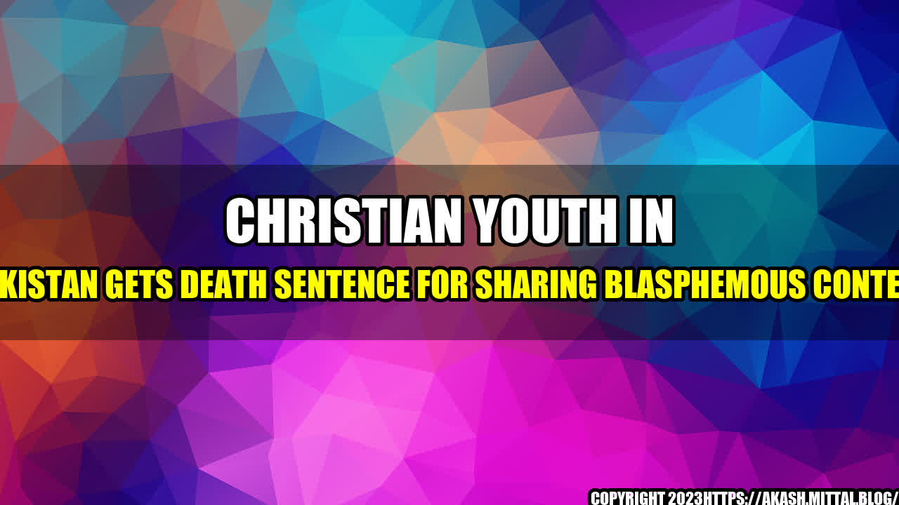

Christian Youth in Pakistan Gets Death Sentence for Sharing Blasphemous Content

On a Monday morning in July, David, a 21-year-old Christian youth in Pakistan, woke up to find a group of policemen standing outside his house. They had come to arrest him on charges of sharing blasphemous content on social media.
David was accused of posting religiously offensive material on Facebook and WhatsApp. The complaint was filed by a Muslim man who said that David had insulted the Prophet Muhammad and Islam.
David denied the charges and said that his account was hacked. However, the court did not believe him and sentenced him to death.
Other Cases of Blasphemy in Pakistan
David's case is not unique in Pakistan, where blasphemy is a highly sensitive issue. According to human rights groups, many people have been falsely accused of blasphemy and have faced severe consequences.
In 2020, a Christian couple was also sentenced to death for allegedly sending blasphemous text messages. The couple denied the charges, but the court found them guilty and handed down the death penalty.
In another case, a Christian woman named Asia Bibi spent nearly a decade on death row after being accused of blasphemy. Her conviction was overturned in 2018, but she had to flee the country due to violent protests by religious extremists.
These cases highlight the danger of blasphemy accusations in Pakistan, where people can face vigilante justice and even mob lynching for allegedly insulting Islam.
The Implications of the Death Sentence
The death sentence for David has sparked outrage among human rights groups, who say that blasphemy laws are often used to target minorities in Pakistan.
The United Nations has also criticized Pakistan's blasphemy laws, saying that they are often misused to settle personal vendettas and discriminate against minority groups.
The case of David is a clear example of the dangers of these laws, which can be used to stifle freedom of expression and religion. It also highlights the need for reform in Pakistan's legal system to prevent the abuse of these laws.
Conclusion
The case of the Christian youth in Pakistan who received a death sentence for sharing blasphemous content is a devastating reminder of the dangers of religious extremism and the misuse of blasphemy laws.
It is crucial for human rights groups and the international community to speak out against these injustices and call for reform in Pakistan's legal system. Only by working together can we ensure that everyone's human rights are protected, regardless of their religion or beliefs.
In conclusion, the case of David is a call to action for us all to stand up for justice and defend the fundamental values of freedom of expression and religion.
Curated by Team Akash.Mittal.Blog
Share on Twitter Share on LinkedIn